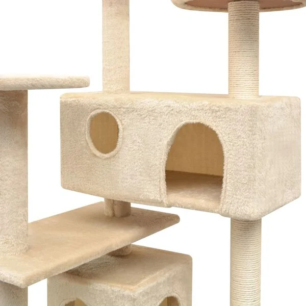

Om produkten
Ge dina kattvänner en välförtjänt lyx med vårt funktions-packade katträd! Detta lekcenter med flera nivåer och massiv ram täckt i mjuk och bekväm plysch, är en trygg plats för dina katter att klösa, klättra, sitta, gömma sig och vila
Dina kattvänner kan vässa sina klor på klöspelarna som är inlindade i sisalrep, vilket ger dem ett hälsosamt utlopp för sina klösinstinkter. De kommer dessutom kunna roa sig med att jaga varandra samtidigt som de hoppar upp och ner i detta roliga lekcenter. När de har fått nog av leken, kan dina små vänner vila ut på de övre plattformarna varifrån de också får en bättre överblick.
Pris
2999 kr
Produktinformation
- Färg: Beige
- Material: Träram + sisalrep + mjuk plysch
- Totala mått: 67 x 67 x 125 cm (L x B x H)
- Med stege, hus, klöspelare och plattformar